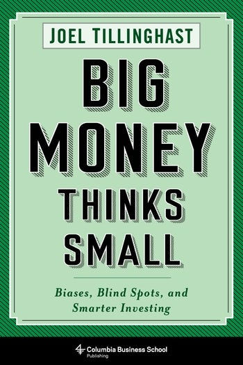

1989年12月27日，富达低价股基金（Fidelity Low-Priced Stock Fund）成立，乔尔·蒂林哈斯特（Joel Tillinghast）成为首任经理。他由彼得·林奇（Peter Lynch）招入富达，两人第一次电话交谈便讨论波多黎各水泥和克莱斯勒。基金最初以每股价格较低的股票为主要猎场，后来规则扩展为股价低于三十五美元或盈利收益率达到罗素2000指数中位数的公司。蒂林哈斯特一直管理该基金到2023年12月31日，此后转任富达股票团队高级顾问；富达提前两年安排萨姆·查莫维茨（Sam Chamovitz）和摩根·佩克（Morgen Peck）共同接班。Morningstar统计显示，从1989年任职起至2019年3月，该基金年化回报约13.3%；这个数字有明确截止日，不能当成此后永久不变的业绩。哥伦比亚大学出版社2017年出版《Big Money Thinks Small: Biases, Blind Spots, and Smarter Investing》，320页，林奇作序。机械工业出版社2020年推出中文版《大钱细思：优秀投资者如何思考和决断》，ISBN为978-7-111-65140-6。
全书五部分、二十一章，结构从"Sleight of Mind"进入"Blind Spots"，再依次讨论管理层、生意寿命和估值。出版社把方法归纳成五项检查：认识自己的决策偏差；只投真正理解的领域；选择诚实且有能力的受托人；避开结构上走向衰败的企业；始终寻找价格错配。蒂林哈斯特讨论锚定、近因偏差、确认偏误和过度自信，但不把行为金融写成术语清单。第十二章"Shipping Bricks and Other Accounting Riddles"要求把每一种怀疑落到报表：收入是否来自一次性交易，库存和应收账款是否比销售增长更快，管理层是否用调整后利润掩盖股权稀释，债务会不会在行业低谷迫使公司融资。"Big Money Thinks Small"也不只是买小盘股，而是大额资金仍要追究会计、激励和竞争格局中的小细节。
案例把这套检查落到公司。Ross Stores与AutoZone说明低价零售和汽配连锁可以靠周转、门店经济和回购长期复利；Hansen Natural后来转型为Monster Beverage，盈利在十五年间增长约一百二十倍，提醒读者最初买入理由可能被更好的业务取代；威尔士水务Dŵr Cymru与Severn Trent用受监管公用事业展示稳定现金流的价值。反面材料包括大众汽车排放造假：汽车销量、品牌和工程能力都无法弥补管理层诚信问题。科技股章节则把研发成功率、产品寿命和网络效应分开，不接受"增长快"自动等于护城河。估值章节还区分报告利润、正常化利润与可分配现金，避免用一个异常年份制造便宜错觉。蒂林哈斯特进一步区分周期性低谷与终局性衰退——油价、利率或库存周期可能恢复，技术替代、监管禁令和债务失控却可能永久损害权益价值。判断错误类型，比为所有便宜股套用同一个市盈率更重要。
Baupost Group创始人塞思·卡拉曼（Seth Klarman）在推荐语中写道："Tillinghast has built an outstanding investment record over three decades by being smart and disciplined."比尔·米勒（Bill Miller）则说自己数十年来一直敬佩并学习蒂林哈斯特的投资能力。推荐语有同行分量，但本书仍是经理人的经验总结，不是对所有归因的独立检验。富达庞大的研究团队、基金低费率和长期客户基础都是业绩环境的一部分；随着资产规模上升，原本能显著贡献收益的小公司也更难买够。书中最可迁移的内容因此不是某只历史赢家，而是尽调顺序：先问自己是否会自欺，再查管理层是否可信、行业是否会消失、债务是否可承受，最后才计算价格。这个顺序能减少因故事动听而跳过风险检查的机会。